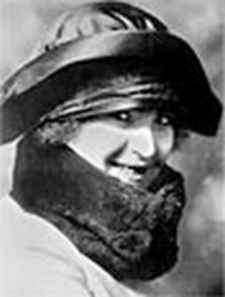

Balabanova A.I.

Балабанова Анжелика Исааковна (итал. Angelica Balabanoff)
Российская и итальянская социалистка
07.05.1878–25.11.1965
Родилась в Чернигове в богатой ассимилированной еврейской семье. Была младшей из девяти детей. До 1894 училась дома у частных учителей и девичьей школе в Харькове. Вышла замуж за инженера Михаила Балабанова, но вскоре бросила его. В 1897 г. навсегда порвала с семьёй и уехала из России в Брюссель, где поступила в Новый университет, там получила докторат по филосфии и литературе. В университете среди её преподавателей были социалисты, анархисты и радикалы — Элизе Реклю, Максим Ковалевский, Эмиль Вандервельде и Селестин Дамблон. Затем училась экономике в Лейпциге и Риме. Заинтересовавшись социалистическими идеями, сблизилась с русскими эмигрантами. Вступила в Союз русских социал-демократов за границей. В 1900 г. вступила в Итальянскую социалистическую партию. По поручению партии она занималась пропагандистской и лекторской работой среди итальянских рабочих-эмигрантов в Швейцарии, а также в других странах. В это время тесно сотрудничала с Антонио Лабриолой, Джачинто Менотти Серрати, Филиппо Турати, Леонидо Биссолати и тогда ещё малоизвестным учителем из Романьи Бенито Муссолини. Балабанова познакомила последнего с марксизмом и помогала ему в партийной работе. С 1912 г. она стала членом ЦК итальянской социалистической партии. Была редактором газеты «Аванти!». Ещё до войны примкнула к левому крылу Итальянской Социалистической Партии. Балабанова, солидаризуясь с левыми социалистами, пыталась сохранить организационное единство с реформистами, что проявлялось и в её дальнейшей деятельности в международном социалистическом движении. В 1907 г. была избрана «братским делегатом» на Пятый съезд РСДРП в Лондоне и в дальнейшем поддерживала тесные связи с российскими социал-демократами. В годы Первой мировой войны сотрудничала в парижской газете Ю.О. Мартова и Л.Д. Троцкого «Наше слово». В 1915 г. принимала деятельное участие в организации, а затем и в работе Циммервальдской конференции, где принадлежала к «центру» и была избрана в исполнительный орган нового объединения — Интернациональную социалистическую комиссию (ИСК). В 1916 г. участвовала в Кинтальской конференции, где сблизилась с Циммервальдской левой (возглавляемой В.И. Лениным), в частности, с большевиками. После Февральской революции летом 1917 года возвратилась в Россию совместно с группой меньшевиков, межрайонцев и эсеров. Вступила в РСДРП(б), пользовалась благосклонностью В.И. Ленина. Работала по поручению большевиков в Стокгольме в штаб-квартире Циммервальдского движения, сдружилась с шведскими социалистами — Туре Нерманом, Фредриком Стрёмом, Цетом Хёглундом и Катой Дальстрём, — а также с советским полпредом Вацлавом Воровским. В 1918 г. Балабанова занимала пост помощника Председателя Совнаркома и Наркома иностранных дел Советской Украины Христиана Раковского. Была членом Исполкома и секретарём Коммунистического интернационала, принимала участие в подготовке I и II конгрессов Коминтерна. В 1922 году в результате разногласий с советскими коммунистами (в частности, несогласия с тактикой руководителя Коминтерна Г.Е.Зиновьева) оставила работу в Коминтерне и уехала в Италию, где присоединилась к возглавляемой Серрати группе «максималистов», отвергавших некоторые из требований Коминтерна, и отказалась покинуть её даже после того, как Серрати вернулся в Итальянскую компартию. В 1924 году исключена из ВКП(б). После окончательной победы фашизма в Италии была вынуждена уехать оттуда. Жила в Швейцарии, Австрии, Франции, США. Была видным деятелем так называемого 2½ Интернационала, занимавшего центристские позиции между социал-демократами и коммунистами, и Социалистического рабочего Интернационала. Возвратилась в Италию после окончания Второй мировой войны. Выступала против союза итальянских социалистов с коммунистами. Примкнула в 1947 г. к Итальянской рабочей социалистической партии (группа Джузеппе Сарагата), преобразованной в 1951 г. в Итальянскую демократическую социалистическую партию. Умерла в Риме в 1965 г.
| Bazarov V.A.< Prev | Next >Belen’kiy A.I. |
|---|